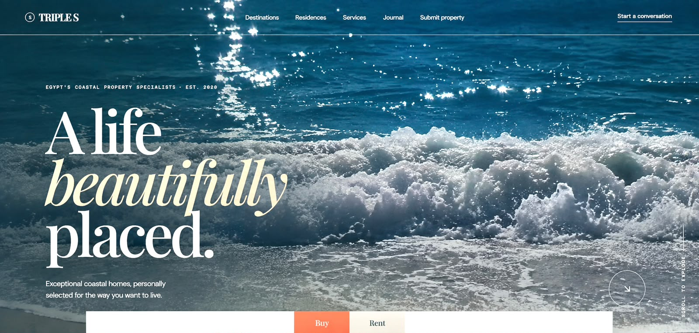

Case study / 01
Real estate · Digital experience
TRIPLES
Real Estate.
A premium property experience for a life beautifully placed.

The problem
The existing digital presence didn’t fully communicate the premium quality of the company’s properties and made it difficult for visitors to explore listings.
The solution
We created a modern, immersive real estate experience focused on visual storytelling, property discovery, and a stronger premium brand presence.